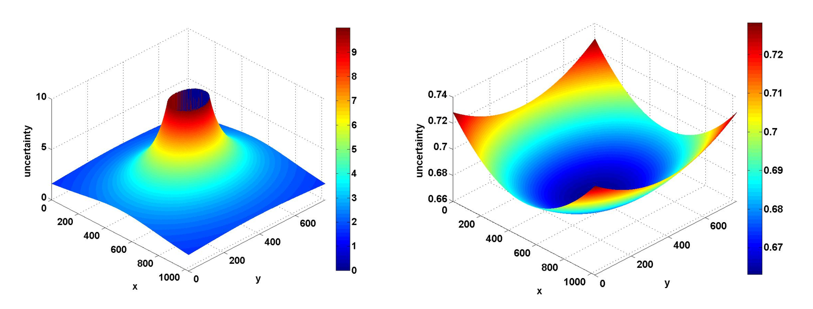

I am a fourth year Ph.D. student at the Visualization and Intelligent Systems Laboratory (VISLab) at UC, Riverside. My advisor is Prof. Bhanu. Before joining VISLab, I received my Bachelor's degree from Sichuan University, China in 2009. I also spent two years studying at Eastern New Mexico University as an exchange student, and received two majors both in Computer Science and Electronic Engineering Technology.
My research interests lie primarily in the interaction of Machine Learning and Computer Vision. Specifically, I focus on human facial expression recognition.
University of California, Riverside
2009.11 - Present
2012.09 - Present
2012.06 - 2012.09
Chinese Student and Scholars Association, (CSSA-UCR)
2010.05 - 2013.01
Align face with non-rigid muscle motion in streaming data.
This technique retains non-rigid muscle motion while aligning facial
features. It not only guarantees temporal smoothness, but is also very
robust to noise and low image resolution.
This technique is suitable for automatic micro-expression analysis.
Poster,
Demo, and
Code are also available!
Related paper: [C6]
EAI is a image representation of a video. It captures the facial
expression information. This representation provides a method to aggregate
dynamic information from expressions with various length. It is also
robust to out-of-plane head rotation.
"NOTICE": Due to legal issue, the code will not be uploaded. However, if you would like to adopt
our technique for coauthorship, send me an email for discussion. We can generate the EAI representations for
research purposes.
Best Entry Award in FERA2011
Related paper: [J1][C2]
Dense Flow-based Face Registration in Video Align face with non-rigid muscle motion in streaming data. |
|
Discrete Facial Expressions Recognition
|
|
|  |
Error Model for Scene Reconstruction
|
[B1] L An, B Bhanu,S Yang, "Unified Face Representation for Individual Recognition in Surveillance Videos", Augmented Vision and Reality, Springer, 2013.
[J1] S Yang, B Bhanu, "Understanding discrete facial expressions in video using an emotion avatar image", IEEE Transaction on Systems, Man, and Cybernetics, Part B, 2012.
[C6] S Yang, L An, B Bhanu, N Thakoor, "Improving Action Units Recognition Using Dense Flow-based Face Registration in Video", IEEE Automatic Face & Gesture Recognition (FG), 2013.
[C5] L An, B Bhanu, S Yang, "Boosting Face Recognition in Real-World Surveillance Videos", IEEE International Conference on Advanced Video and Signal-Based Surveillance (AVSS), 2012.
[C4] L An, B Bhanu, S Yang, "Face recognition in multi-camera surveillance videos", IEEE International Conference on Pattern Recognition (ICPR), 2012.
[C3] A Cruz, B Bhanu, S Yang, "A psychologically-inspired match-score fusion model for video-based facial expression recognition", International Conference on Affective Computing and Intelligent Interaction, 2011.
[C2] S Yang, B Bhanu, "Facial expression recognition using emotion avatar image", IEEE Automatic Face & Gesture Recognition and Workshops (FG), 2011.
[C1] S Yang, B Bhanu, AI Mourikis, "Error model for scene reconstruction from motion and stereo", IEEE Computer Vision and Pattern Recognition Workshops (CVPRW), 2010.
Reviewer for Elsvier Journal of Pattern Recognition
Reviewer for IEEE Conferences including: CVPR, ICPR, ICIP, FG.